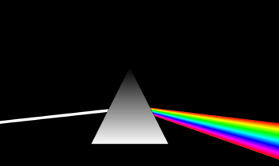
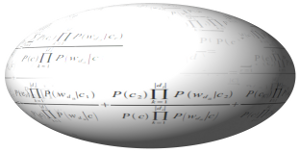
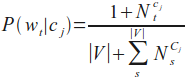
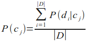
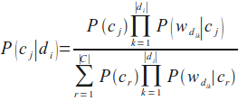
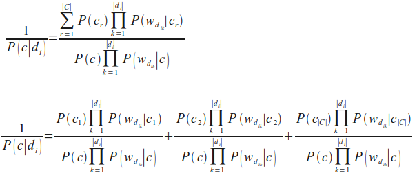
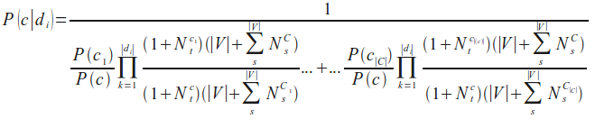

Text Categorization and Classification
Introduction
 Document classification/categorization is a topic in information science, a science dealing with the collection, analysis, classification, categorization, manipulation, retrieval, storage and propagation of information.This might sound very abstract, but there are lots of situations nowadays, where companies are in need of automatic classification or categorization of documents. Just think about a large company with thousands of incoming mail pieces per day, both electronic or paper based. Lot's of these mail pieces are without specific addressee names or departments. Somebody has to read these texts and has to decide what kind of a letter it is ("change of address", "complaints letter", "inquiry about products", and so on) and to whom the document should be proceeded. This "somebody" can be an automated text classification system.

Automated text classification, also called categorization of texts, has a history, which dates back to the beginning of the 1960s. But the incredible increase in available online documents in the last two decades, due to the expanding internet, has intensified and renewed the interest in automated document classification and data mining. In the beginning text classification focussed on heuristic methods, i.e. solving the task by applying a set of rules based on expert knowledge. This approach proved to be highly inefficient, so nowadays the focus has turned to fully automatic learning and clustering methods.
The task of text classification consists in assigning a document to one or more categories, based on the semantic content of the document. Document (or text) classification runs in two modes:
- The training phase and the
- prediction (or classification) phase.
The training phase can be divided into three kinds:
- supervised document classification is performed by an external mechanism, usually human feedback, which provides the necessary information for the correct classification of documents,
- semi-supervised document classification, a mixture between supervised and unsupervised classification: some documents or parts of documents are labeled by external assistance,
- unsupervised document classification is entirely executed without reference to external information.
We will implement a text classifier in Python using Naive Bayes. Naive Bayes is the most commonly used text classifier and it is the focus of research in text classification. A Naive Bayes classifier is based on the application of Bayes' theorem with strong independence assumptions. "Strong independence" means: the presence or absence of a particular feature of a class is unrelated to the presence or absence of any other feature. Naive Bayes is well suited for multiclass text classification.
Formal Definition
Let C = { c1, c2, ... cm} be a set of categories (classes) and D = { d1, d2, ... dn} a set of documents.
The task of the text classification consists in assigning to each pair ( ci, dj ) of C x D (with 1 ≤ i ≤ m and 1 ≤ j ≤ n) a value of 0 or 1, i.e. the value 0, if the document dj doesn't belong to ci
This mapping is sometimes refered to as the decision matrix:
|
|
d1 |
... |
dj |
... |
dn |
|---|---|---|---|---|---|
|
c1 |
a11 |
... |
a1j |
... |
a1n |
|
... |
... |
... |
... |
... |
... |
|
ci |
ai1 |
... |
aij |
... |
ain |
|
... |
... |
... |
... |
... |
... |
|
cm |
am1 |
... |
amj |
... |
amn |
The main approaches to solve this task are:
- Naive Bayes
- Support Vector Machine
- Nearest Neighbour
Conditional Probability
The Conditional probability P(A|B) is the probability of some event A, given the occurrence of some other event B. When in a random experiment the event B is known to have occurred, the possible outcomes of the experiment are reduced to B, and hence the probability of the occurrence of A is changed from the unconditional probability into the conditional probability given B. The Joint probability is the probability of two events in conjunction. That is, it is the probability of both events together. The joint probability of A and B is written asP(A ∩ B), P(AB) or P(A,B)
The conditional probability is defined by
P(A|B) = P( A ∩ B) / P(B)
Example Conditional Probability
A medical research lab proposes a screening to test a large group of people for a disease. An argument against such screenings is the problem of false positive screening results.Suppose 0,1% of the group suffer from the disease, and the rest is well:
P("sick") = 0,1 % = 0.01 and P("well") = 99,9 % = 0.999.
The following is true for a screening test:
If you have the disease, the test will be positive 99% of the time, and if you don't have it, the test will be negative 99% of the time: P("test positive" | "well") = 1 % and P("test negative" | "well") = 99 %.
Finally, suppose that when the test is applied to a person having the disease, there is a 1% chance of a false negative result (and 99% chance of getting a true positive result), i.e. P("test negative" | "sick") = 1 % and P("test positive" | "sick") = 99 %
| Sick |
Healthy |
Totals |
|
| Test
result positive |
99 |
999 |
1098 |
| Test
result negative |
1 |
98901 |
98902 |
| Totals |
100 |
99900 |
100000 |
There are 999 False Positives and 1 False Negative.
Problem:
In many cases even medical professionals assume that "if you have this sickness, the test will be positive in 99 % of the time and if you don't have it, the test will be negative 99 % of the time. Out of the 1098 cases that report positive results only 99 (9 %) cases are correct and 999 cases are false positives (91 %), i.e. if a person gets a positive test result, the probabiltiy that he or she actually has the disease is just about 9 %. P("sick" | "test positive") = 99 / 1098 = 9.02 %
Naive Bayes Classifier
A Bayes classifier is a simple probabilistic classifier based on applying Bayes' theorem with strong (naïve) independence assumptions, i.e. an "independent feature model".In other words: A naive Bayes classifier assumes that the presence (or absence) of a particular feature of a class is unrelated to the presence (or absence) of any other feature.
The Bayes Theorem:
P(A|B) = P(B|A)P(A) / P(B)P(A|B) is the conditional probability of A, given B (posterior probability), P(B) is the prior probability of B and P(A) the prior probability of A. P(B|A) is the conditional probabilty of B given A, called the likelyhood.
An advantage of the naive Bayes classifier is that it requires only a small amount of training data to estimate the parameters necessary for classification.
Because independent variables are assumed, only the variances of the variables for each class need to be determined and not the entire covariance matrix.
Definition of independent events:
Two events E and F are independent, if both E and F have positive probability and if P(E|F) = P(E) and P(F|E) = P(F)
Formal Derivation of the Naive Bayes Classifier:
 Let C = { c1, c2, ... cm} be a set of classes or categories and D = { d1, d2, ... dn} be a set of documents.Each document is labeled with a class.
The set D of documents is used to train the classifier.
Classification consists in selecting the most probable class for an unknown document.
The number of times a word wt occurs within a document di will be denoted as Nit. NtC denotes the number of times a word wt ocurs in all documents of a given class C.
P(di|cj) is 1, if di is labelled as cj, 0 otherwise
The probability for a word wt given a class cj:

The probability for a class cj is the quotient of the number of Documents of cj and the number of documents of all classes, i.e. the learn set:

Finally, we come to the formula we need to classify an unknown document, i.e. the probability for a class cj given a document di:

Unfortunately, the formula of P(c|di) we have just given is numerically not stable, because the denominator can be zero due to rounding errors. We change this by calculating the reciprocal and reformulate the expression as a sum of stable quotients:

We can rewrite the previous formula into the following form, our final Naive Bayes classification formula, the one we will use in our Python implementation in the following chapter:

Further Reading
There are lots of articles on text classification. We just name a few, which we have used for our work:- Fabrizio Sebastiani. A tutorial on automated text categorisation. In Analia Amandi and Alejandro Zunino (eds.), Proceedings of the 1st Argentinian Symposium on Artificial Intelligence (ASAI'99), Buenos Aires, AR, 1999, pp. 7-35.
- Lewis, David D., Naive (Bayes) at Forty: The independence assumption in informal retrieval, Lecture Notes in Computer Science (1998), 1398, Issue: 1398, Publisher: Springer, Pages: 4-15
- K. Nigam, A. McCallum, S. Thrun and T. Mitchell, Text classification from labeled and unlabeled documents using EM, Machine Learning 39 (2000) (2/3), pp. 103-134.